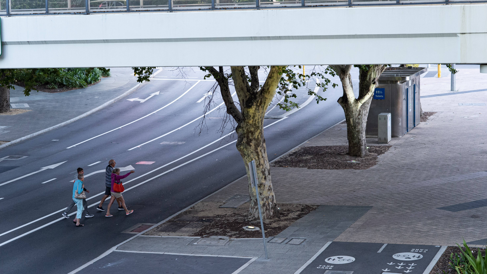

Street Photography is getting more and more dificult these days.. anything you shot would hinge on certain copy rights. Especially shooting people is almost impossible.. except from one angle... behind. as it would not reveal the indentity. I started shooting people in the various street in Tokyo when I was working in central Tokyo area. directing camera lenz to people would make them frown, so I started taking photos of people only from the behind. at first, it was a substitutive solution.. however, gradually I came to realize, that sometimes people's back would tell more stories than front
I always liked the movies that conveys subtle emotions from the tiny motion of your face, or the way you walk. for me, street photograhy from behid is something similar of that kind. Thereafter, I started taking photos from the behind. untill facial recognition or any other sorts of detective technology makes it possible to tell who you are from the behind look, and people get really conscious of any representation of their image on the web, I would enjoy this time-bound story chatching activities.